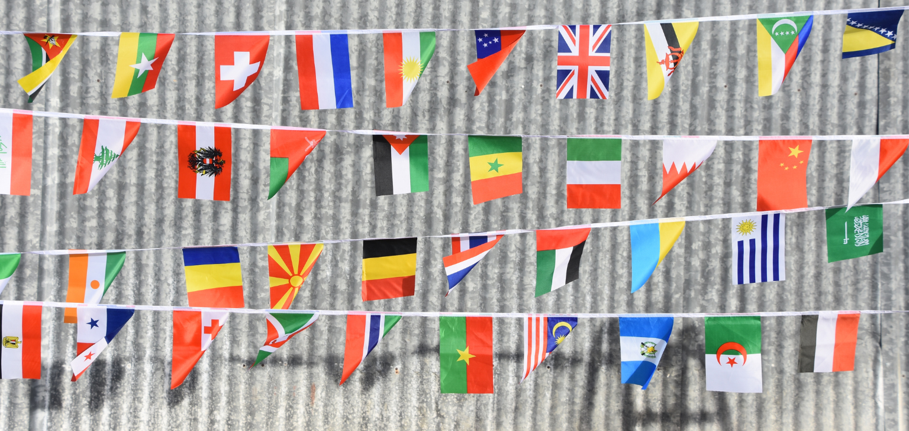
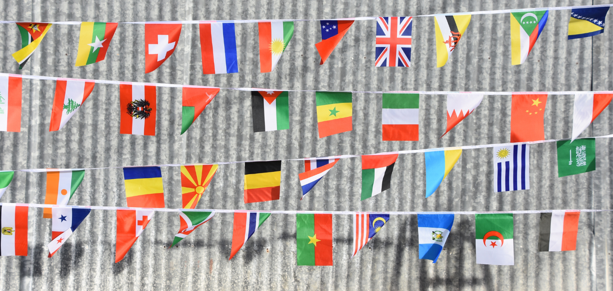

KESIMPULAN
Sustainable Development Goals (SDGs) memberikan arah yang jelas untuk menciptakan dunia yang lebih baik, inklusif, dan berkelanjutan bagi semua masyarakat dunia. Tujuan dari SDGs, seperti Quality Education atau Pendidikan Berkualitas berperan penting dalam memberdayakan individu untuk mengatasi berbagai tantangan sosial, ekonomi, dan lingkungan. Dengan pendidikan yang baik, individu dapat memiliki pengetahuan dan keterampilan yang mendukung pertumbuhan ekonomi, sosial, dan pembangunan yang berkelanjutan.
Secara global, SDGs telah membawa dampak positif yang signifikan dalam masalah sosial seperti penurunan kemiskinan, peningkatan kesehatan, pengurangan ketimpangan sosial, dan pengurangan dampak perubahan iklim. Negara-negara di seluruh dunia bekerja sama untuk mengatasi tantangan global, seperti perubahan iklim, kesetaraan gender, dan ketahanan pangan. Begitu juga dengan Indonesia, yang terlibat aktif dalam forum internasional, dan berkomitmen untuk mencapainya melalui kebijakan nasional dan berbagai program pembangunan.
Di dalam Indonesia, upaya untuk mencapai SDGs telah diintegrasikan ke dalam kebijakan dan rencana pembangunan nasional. Program-program seperti Program Keluarga Harapan (PKH), Jaminan Kesehatan Nasional (JKN), Kartu Indonesia Pintar (KIP), dan berbagai program lainnya menunjukkan komitmen negara dalam memajukan kesejahteraan masyarakat, meningkatkan kualitas pendidikan, dan menjaga kelestarian lingkungan. Namun, tantangan seperti ketimpangan pembangunan antara wilayah perkotaan dan pedesaan serta keterbatasan anggaran dan sumber daya masih menjadi hambatan dalam mewujudkan tujuan SDGs secara merata.
Di balik pencapaian dan tantangan tersebut, nilai-nilai Pancasila sangat relevan untuk mencapai 17 (tujuh belas) tujuan SDGs. Pancasila mengajarkan prinsip-prinsip yang selaras dengan tujuan SDGs. Berikut ini adalah hubungan antara nilai-nilai Pancasila dan SDGs, antara lain:
- Ketuhanan Yang Maha Esa (sila pertama) tercermin dari rasa tanggung jawab terhadap sesama dan lingkungan.
- Kemanusiaan yang Adil dan Beradab (sila kedua) tercermin pada usaha mencapai pendidikan berkualitas, pengurangan kemiskinan, serta pengentasan ketimpangan sosial merupakan inti dari SDGs yang sejalan dengan prinsip kemanusiaan dalam Pancasila. Meningkatkan kesejahteraan dan martabat manusia, terutama kelompok rentan seperti perempuan, anak-anak, dan kelompok marginal, menjadi fokus bersama.
- Persatuan Indonesia (sila ketiga) tercermin dengan mendorong kerjasama internasional dan soliditas antara negara-negara, sektor swasta, dan masyarakat dalam mencapainya.
- Kerakyatan yang Dipimpin oleh Hikmat Kebijaksanaan dalam Permusyawaratan/Perwakilan (sila keempat) tercermin dengan membutuhkan partisipasi aktif dari seluruh lapisan masyarakat. Keputusan yang melibatkan berbagai pihak, dari pemerintah, masyarakat, hingga sektor swasta, mencerminkan musyawarah untuk mencapai kesepakatan yang terbaik.
- Keadilan Sosial bagi Seluruh Rakyat Indonesia (sila kelima) tercermin pada salah satu tujuan utama SDGs, yaitu mengurangi ketimpangan sosial, memastikan akses yang setara terhadap pendidikan, kesehatan, dan peluang ekonomi. Keadilan sosial dalam Pancasila mengutamakan pentingnya kesetaraan dan kesejahteraan bagi seluruh rakyat Indonesia, terutama kelompok-kelompok yang kurang mampu.
Dengan demikian, kerja sama internasional, SDGs, dan Pancasila saling melengkapi dalam mewujudkan tujuan pembangunan yang berkelanjutan dan inklusif. Penerapan nilai-nilai Pancasila dalam implementasi SDGs tidak hanya memperkuat pencapaian tujuan global, tetapi juga memastikan bahwa proses pencapaian tersebut dilakukan dengan semangat gotong-royong, keadilan, dan persatuan, serta dengan menghormati hak asasi setiap individu. Meskipun masih terdapat banyak tantangan, komitmen bersama dari seluruh dunia, sangat diperlukan untuk mencapai tujuan SDGs pada tahun 2030.